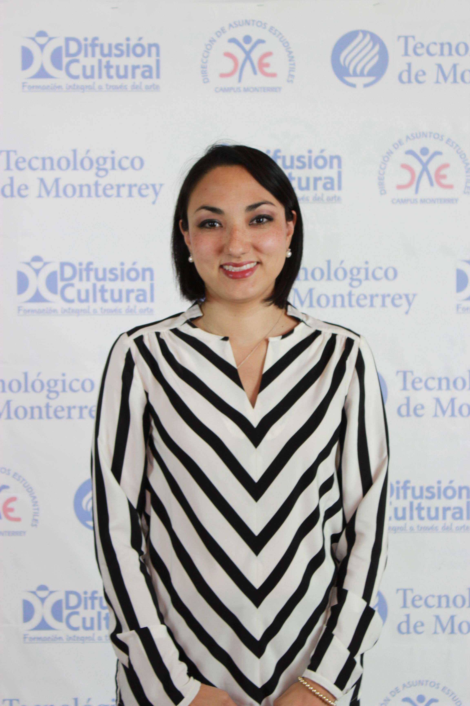
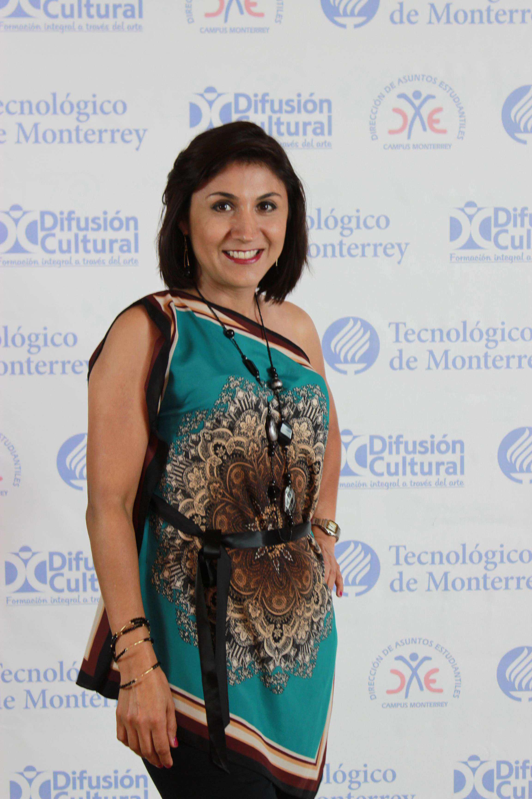
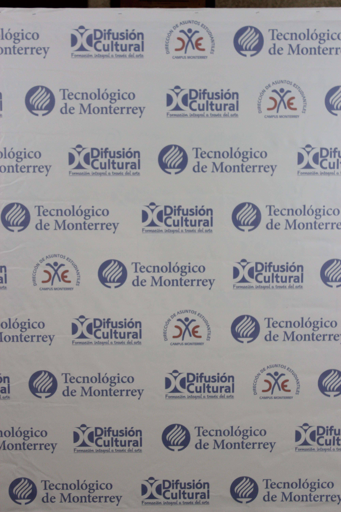
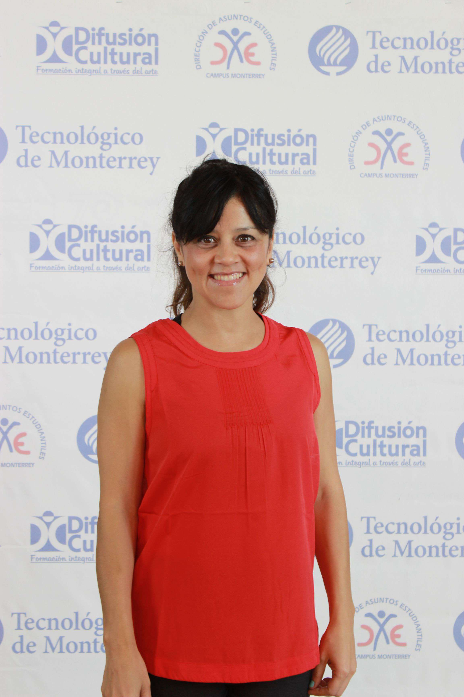
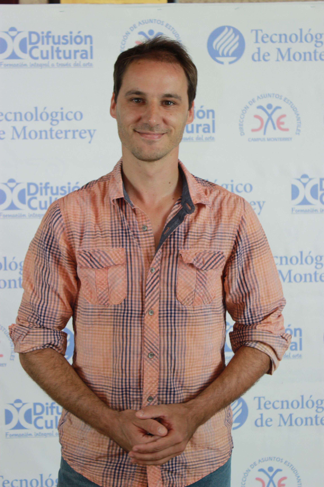
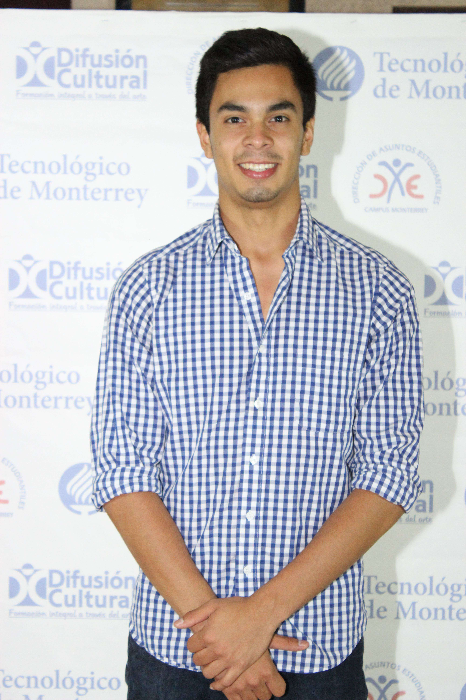
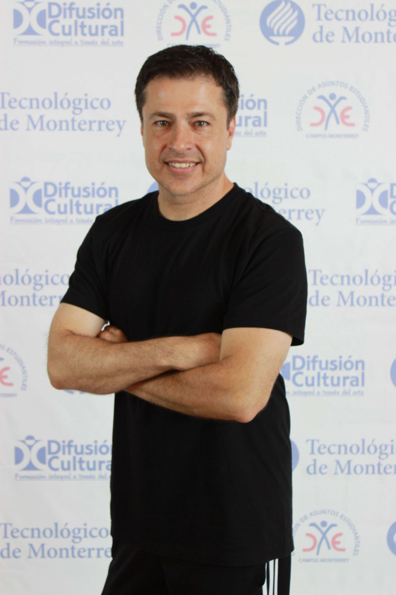
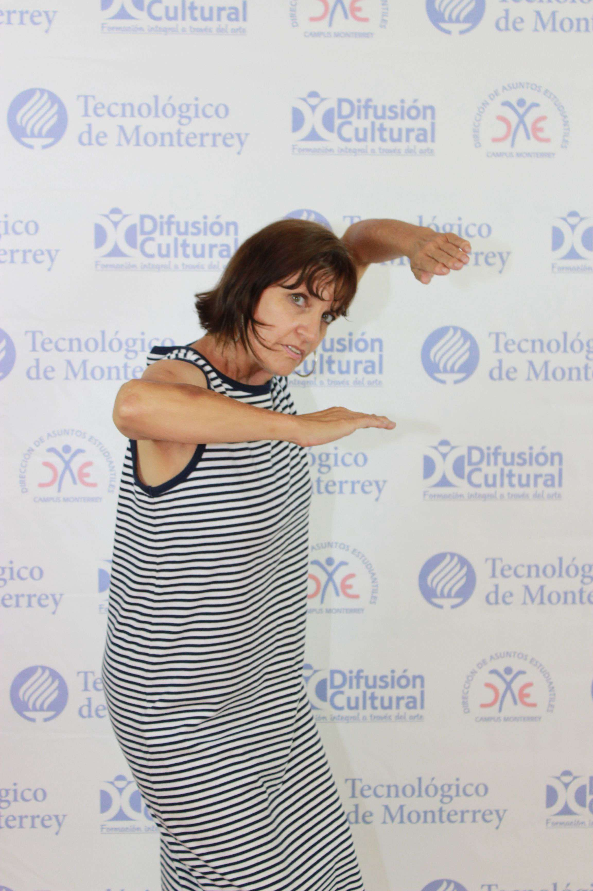
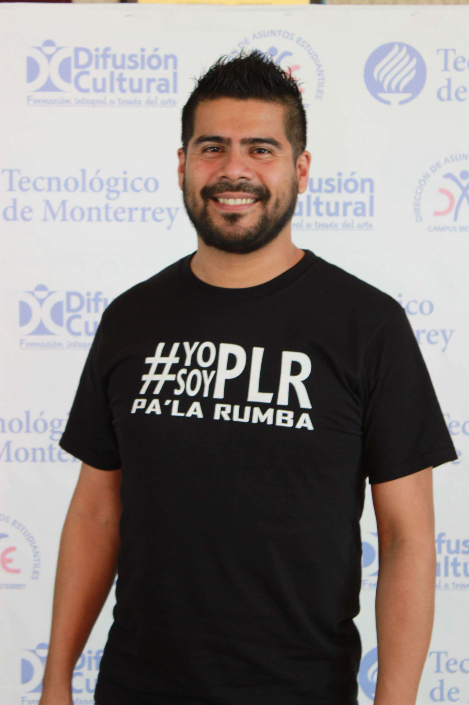

Alejandra Miyamoto. (Danzas polinesias)
Ejecutante de bailes polinesios desde la edad de siete años con la guía de extraordinarias maestras. Desde hace nueve años dedicada a difundir estas danzas con los conocimientos adquiridos de maestros nativos de las islas del pacífico sur: Hawaii, Tahiti, Samoa, Islas Cook, Nueva Zelanda, entre otras, participando en diversos eventos a nivel estatal y nacional consistentes en congresos, seminarios y encuentros de danza a nivel regional donde obtuvo el reconocimiento como mejor bailable. En el año 2009 fue seleccionada e invitada a bailar en Anaheim, California con la Compañía internacional Nonosina. Fundadora y Directora del grupo de danza y música tahitiana: Manuarii, con el cual ha sido invitada y contratada en diversos eventos culturales y sociales. Coreógrafa e instructora de danza árabe desde hace seis años con conocimientos adquiridos de maestros y coreógrafos reconocidos en el medio.
Alma Ramos. (Folklore 2).
Maestra en Educación Media en Idiomas. Estudios realizados: Escuela de Graduados de la ENSE de 1998 al 2001. Licenciada en Educación Media en la Especialidad de Inglés y Francés. Escuela Normal Superior del Estado Profr. Moisés Saenz Garza de 1993 a 1997. Bachillerato en Arte y Humanidades con específico en Danza. Estudios realizados en el Centro de Educación Artística Alfonso Reyes del INBA de 1986 a 1989. Maestra de Club de Danza Escuela Secundaria Jesús Reyes Heroles de 1989 a 1992. Maestra de Educación Artística Escuela Secundaria #19 de 1989 a 1990
Arturo Salazar. (Hip hop 3)
Bailarín, coreógrafo y Maestro. Forma parte de la Compañía Hip funk Monterrey, fundador y maestro de la comunidad de danza urbana Mty ( CDU), Maestro y Coreógrafo del Tecnológico de Monterrey, a representado a Monterrey nacional e internacionalmente en diferentes competencias y presentaciones, su experiencia profesional durante 5 años como maestro en diferentes escuelas de danza, entre ellas Maga Domene Escuela de Danza, Hip Funk Dance Studio, Dansart ,Magaly Guerra, In Motion, Gina Emilson, Universidad Regiomontana, Form Dance Danzzare en Cumbres, Lulis Villarreal en San Pedro, , Estudio de Danza Ambar en Nuevo Laredo, Turning Pointe y Dance Spot en Texas; así como impartido cursos en Tampico Tamaulipas, Zacatecas y Texas A tomado curso y trabajado a lado de diferentes bailarines reconocidos a nivel nacional e internacionalmente, además año tras año en continuación con su preparación a viajando a diferentes ciudades en México y EUA a tomar cursos, Workshops, Master class.
Carolina Almaguer. (Bailes latinos niñ@s).
Se ha presentado como bailarina y coreógrafa en numerosas ocasiones con distintos espectáculos impulsando la cultura y danza latinoamericana y dirigiendo múltiples performances urbanos, experimentando con ellos la interacción dinámica con los diferentes públicos y haciendo de ésta su principal elemento de expresión artística. Ha participado en proyectos para la N.F.L., igualmente para el Gobierno del Estado en varios eventos incluyendo “Luces del milenio” en el año 2000 tomando como escenario el Palacio de Gobierno así como también ha participado y ganado 3 campeonatos por parte de la A.F.A.I.M en técnicas de danza y expresión creativa.
Dulce Cházaro. (Jazz lírico).
Realizó sus estudios de ballet y jazz en diferentes academias de Monterrey, Veracruz y Estados Unidos. Ha tomado cursos en la asociación: Dance Educators of America “DEA”, Jazz Dance World Congress. Con “Gus Giordano, New York City Dance Alliance Congress “NYCDA”, así como Metodología de Danza Clásica “Prodanza”. Participó como bailarina en el ITESM en espectáculos como Danzamimos, Raíces, Nuevos Valores, fue Directora y Maestra en su propia Academia así como fue coreógrafa de Danzamimos. Actualmente es Directora de Ímpetu del Tecnológico de Monterrey.
Erika Pérez. (Bachata)
Obtuvo la certificación en metodología para la Enseñanza del baile de salsa com Stacey López en la Universidad de Puerto Rico, fue bailarina del Salzumba Dance Company y del Kumbala Dance Company, ha tomado talleres con los maestros Abel Peña, Stacey López y Sabor Vallero, fue la directora del grupo representativo de salsa y ritmos latinos de la UDEM y coreógrafa del Festival de Ritmos Baila, Homenaje a Cuba: “Sones, colores y sabores”, en la semana Cultural de la misma universidad, participo en competencias de salsa en Houston obteniendo el 4to. lugar y en Monterrey obteniendo el 3er. lugar.
Gilberto Pérez. (Bailes latinos)
Graduado de la Escuela Nacional de Danza de la Habana, Cuba como bailarín y profesor de Danza Moderna y Folklórica. Bailarín y coreógrafo de la compañía Codanza, Academia de Danza Contemporánea de Holguín y miembro de la Unión Nacional de Escritores y Artistas de Cuba. Miembro fundador de la corriente “Fundación Integral de la Danza” en 1992. Ha realizado presentaciones en escenarios como los XI Juegos Panamericanos, Teatro Eddy Suñol, Festival Internacional de Ballet de la Habana, Jornada Nacional de Danza en el Teatro Mella entre otros. Actualmente es profesor de las clases de cardio-salsa y danza afro y rumba cubana en la academia de Baile Ritmos.
Hildamaría Fernández. (Hip-hop 1 y Street jazz)
A la edad de 10 años inicia su entrenamiento de gimnasia. A los 17 años comienza sus estudios de danza en el departamento de Difusión Cultural del Tecnológico de Monterrey. Como gimnasta ha participado en competencias locales y estatales, estando entre los primeros cinco lugares. En el área de danza ha participado en eventos como Danzamimos, Raíces y Nuevos Valores de la Danza. Ha tomado cursos de nivel internacional como Urban Jamm, DUBO Force y Giordano Jazz Company. Así también, ha cursado talleres de acrobacia, gimnasia para la docencia y clases como jazz, ballet, contemporáneo, hip hop, break dance y capoeira. En el año 1998 da inicio su labor de docencia, impartiendo clases de gimnasia. Egresada de la Licenciatura de Danza Contemporánea en la UANL.
Irma Serna. (Jazz para niñas)
Inició sus estudios de Danza en reconocidas Academias de Monterrey. Ha tomado cursos con importantes maestros como: Irina Provorova, María Elena Martínez, Edel Carbonel, Serguei Sokolov. Participó como bailarina del Tec de Monterrey desde 1995 en diferentes espectáculos como Danzamimos, Raíces, Revistas Musicales, destacando como Mejor Bailarina. Ha realizado giras con el Ballet Estampas Mexicanas y con Raíces a Francia e Italia. Ha trabajado como maestra de jazz en diferentes Academias de Monterrey. Actualmente es coreógrafa del Espéctaculo Raíces y maestra de Jazz para niñas.
Jesús Delgado. (Break dance)
Ha participado en eventos competitivos durante 15 años, entre ellos el “INTERNACIONAL HIP HOP LAS VEGAS”, y nacionales como Battle Sonic, Battle Resurrección, La Gran Reta, Battle LG, obteniendo los primeros lugares y artísticamente ha tenido la oportunidad de bailar con los siguientes grupos Kumbia kingz, Control Machete, Flor de Lingo, Lingo Squatd y Daddy Yankee y en obras de teatro con la Alianza Francesa y obras en el municipio de San Nicolás de los Garza.
Juan Acosta. (Folklore 1)
Integrante al Ballet Folklórico Estampas Mexicanas (2001-actual). Participación con el Tec de Monterrey en la inauguración del Grand Prix (2001). Gira de 4 semanas por distintos lugares del país de Francia (2003). Participación en el espectáculo para el 60 aniversario del Tec de Monterrey (2003). Congreso Internacional de Hispanistas, presidido por los príncipes de Asturias (2004). Encuentro Mundial de Karate (2005). Participación en la final de la zona noreste para representar a México en la Folkloreada en el país de China (2008). Participación en el 1er Festival Internacional Globalifílicos (2011). Participación en 7 ocasiones en el festival Mitote Folklórico 15, 20, y 25 aniversarios del grupo al que pertenece Ballet Folklorico Estampas Mexicanas.
Mayra Rodríguez. (Salsa 3)
Obtuvo la certificación en el estilo salsa Los Angeles, en San Juan, Puerto Rico, por la universidad de la Salsa en el 2004. Estudio salsa con maestros reconocidos internacionalmente como son Stacey López, Tito Ortos, Jayson Molina, Josie Neglia, Joby Vázquez, Vanesa Millán, Adie Rodríguez, Rogelio Moreno entre otros. Ganadora del concurso de salsa y merengue en Monterrey 2002. Representante de México con el grupo Salzumba en el Congreso Mundial de la Salsa en San Juan, Puerto Rico (2002 y 2003). Además ha participado en congresos internacionales de salsa entre los que destacan Puerto Rico, Los Ángeles, Houston y México D.F. También ha a cursado ritmos latinos (cha-cha-chá, guaguancó, salsa estilo cubano, bachata, bomba y plena), danzas árabes, hip hop, Jazz, cumbia texana, hawaiano y tahitiano y bailes de salón.
Miguel Moreno. (Hip hop 2)
Fundador y Director de “FRESH FX CREW” Monterrey. Ganador del primer lugar categoría “All Styles” representando México en la competencia internacional “World of Dance Canada”. Actualmente Director y Organizador de las Competencias de baile “Hit The Beat” (Organizadas en México y Canadá). Ha colaborado con artistas locales, nacionales y de talla internacional como “Tito el Bambino, Wisin & Yandel, Daddy Yankee y 3BALL Monterrey, solo por nombrar algunos. Actualmente forma parte del cuerpo de baile de los Artistas Latinos “YOHAN & ZIRI”. Reconocido a nivel nacional e internacional por ser un bailarín versátil y por sus Cursos y estilos Hip Hop, Popping & Locking, Breakdance, New style & House. Bailarín y Coreógrafo de instituciones de renombre como el ITESM, TEC Milenio, e importantes
Nohemí Alemán. (Hip hop heels)

Es egresada del Tec de Monterrey, durante su estancia en la institución participó en programas de Difusión Cultural como miembro de la Compañía de Danza Contemporánea representando durante 4 años consecutivos al Tec de Monterrey en eventos nacionales. Así mismo, ha participado como coreógrafa y ejecutante en competencias como Cheer Talent, Jump, Dance Educators of América, entre otras. Como parte de su formación y actualización, cursó dos veranos consecutivos en Nueva York y dos más en Los Angeles California.
Paulo Mecchia. (Tango 1 y 2)
Es egresada del Tec de Monterrey, durante su estancia en la institución participó en programas de Difusión Cultural como miembro de la Compañía de Danza Contemporánea representando durante 4 años consecutivos al Tec de Monterrey en eventos nacionales. Así mismo, ha participado como coreógrafa y ejecutante en competencias como Cheer Talent, Jump, Dance Educators of América, entre otras. Como parte de su formación y actualización, cursó dos veranos consecutivos en Nueva York y dos más en Los Angeles California.
Raúl Contreras.(Jazz adolescentes).
Estudiante de la Licenciatura en Danza Contemporánea de la Escuela Superior de Música y Danza de Monterrey. Se entrena en distintas disciplinas tales como Jazz, Contemporáneo, Hip Hop, Acrobacia y Ballet. Ha tomado cursos en distintas convenciones como Impact Dance Convention donde fue acreedor de la beca “EDGE Performing Arts Center” Ha bailado para Coca Cola, FIFA, Tigres, Danza 3, Concierto Exa 2014, Gobierno del Estado de Nuevo Leon, Festival Internacional de Danza Contemporánea de Tamaulipas, entre otros.
Roberto Rodríguez. (Jazz musical y Jazz open)
12 años de bailarín profesional (Verónica Castro, Paulina Rubio, Kenia, Ballet de Sergio Esquivel, Alicia Villarreal, entre otros.) Ocho años como maestro y coreógrafo de jazz. Ha participado en eventos y competencia de la AFAIM, Espectáculos de la NFL, Academia de Miguel Sahagún. Ocho veces ganador del primer lugar en el Concurso de Porristas de la AFAIM y tercer lugar en Valores Juveniles. Fue Coreógrafo de Danzamimos y actualmente es maestro de jazz.
Sunny Savoy. (Danza contemporánea)
Directora y Fundadora de la Compañía Sunny Savoy, el trabajo coreográfico de Sunny ha sido presentado Alemania, Bélgica, Francia, Inglaterra, Italia, Canadá, Holanda, Luxemburgo, Portugal, Estados Unidos, República de Chipre y México con su propia compañía y con otras, nacionales e internacionales. Fundadora y Directora por 11 años de la compañía UDLA Danza de la Universidad de las Américas, Puebla, donde laboró como profesora de tiempo completo, coordinadora de la licenciatura en danza y jefe del departamento de Artes durante 11 años. Ha recibido becas y premios de varios instituciones como INBA, Fideicomiso para la Cultura México/Estados Unidos, FONCA Nacional y Estatal de Puebla. Ganó el Premio a la Creación Coreográfica “Guillermina Bravo” en 2001 y ha sido finalista del Premio INBA-UAM en cinco ocasiones. Acaba de celebrar sus 25 años como coreógrafa y 20 años de su compañía. Vive en México desde Mayo de 1984.
Vanessa Tapia. (Ballet para niñas)
Inició sus estudios en la Danza en octubre del 2003 en la Academia de Danza Estrellitas Cd. Victoria Tamaulipas formando parte del grupo seleccionado a partir de agosto del 2004 hasta mayo del 2013 siendo parte de eventos como el Intercolegial de Baile en Monterrey NL etapas regional y nacional, el carnaval victorense y la Confederación Oficial de Porristas (COP) en el área de danza. En el 2010 se unió al Estudio de ballet Lettiery afiliado a la compañía Royal Academy of Dance in London teniendo un receso de seis meses en el 2012. En esta academia cursó hasta el octavo grado obteniendo medallas de plata y oro en sus examinaciones. En el semestre enero 2012 a junio 2012 fue participante en el grupo de danza en Moscrop Secondary, Vancouver Canadá obteniendo al finalizar el curso el título de la mejor bailarina. A inicios del año 2014 tomó el curso de ballet impartido por Difusión Cultural obteniendo al finalizar el reconocimiento a una bailarina destacada. Para finalizar en enero del 2015 fue participante del elenco de Raíces la vuelta al mundo.
Vladimir Pineda (Salsa 2)
Actualmente instructor de Salsa y Ritmos Latinos y Director de Pa´La Rumba Dance Company, Bailarín profesional de Salsa, Bachata y Kizomba y representante de México en el extranjero en competencias y congresos. Instructor por tres años de Salsa en Prepa Tec Garza La Guera, Prepa Tec Valle Alto, Prepa Tec Milenio San Nicolás, Prepa Tec Milenio Guadalupe, U.A.N.L, FIME, Facultad de Derecho, Ciencias Biológicas, Químicas
Vicky Gamboa. (Danzas árabes 1 y 2)
12 años de bailarín profesional (Verónica Castro, Paulina Rubio, Kenia, Ballet de Sergio Esquivel, Alicia Villarreal, entre otros.) Ocho años como maestro y coreógrafo de jazz. Ha participado en eventos y competencia de la AFAIM, Espectáculos de la NFL, Academia de Miguel Sahagún. Ocho veces ganador del primer lugar en el Concurso de Porristas de la AFAIM y tercer lugar en Valores Juveniles. Fue Coreógrafo de Danzamimos y actualmente es maestro de jazz.